Diputación de Granada · Ventanilla Electrónica del Empleado Público (VEC)
Versión del manual: 17 de julio de 2026.
El Portal del Empleado es la aplicación web unificada de la Diputación de Granada para la gestión interna de Recursos Humanos. Los distintos ámbitos funcionales (Bolsas de trabajo, Personal, Nóminas, Cronos, Dietas, Solicitudes y certificados) se presentan como módulos de un mismo portal: comparten identidad, datos, documentos y criterios de seguridad, y se van habilitando por fases.
En la fase inicial está habilitado el módulo Bolsas de trabajo, que cubre el ciclo completo de una bolsa de empleo temporal: elaboración y publicación, llamamientos conforme a las bases y al Reglamento, contratos y ceses, motor de reglas, consulta para candidatos, estadísticas, generación documental, comunicaciones y auditoría.
Este manual describe cada pantalla del módulo y la forma correcta de operar con él. Las imágenes proceden del modo de demostración del portal: los datos que muestran son íntegramente sintéticos y así lo indica de forma permanente la franja superior amarilla. En la operación real esa franja no existe y la información procede de la API interna autorizada.
El portal se abre desde el navegador corporativo, en la dirección interna
/portal-empleado/. La sesión se resuelve en el servidor: la cabecera
muestra en todo momento el nombre y el perfil efectivo de la persona
conectada (en las imágenes, «María Pérez · Perfil de presentación RRHH»).
Todas las pantallas comparten la misma estructura:
La navegación funciona con ratón y con teclado; existe un salto directo al contenido para lectores de pantalla y las tablas anchas se desplazan dentro de su propio marco sin romper la página.
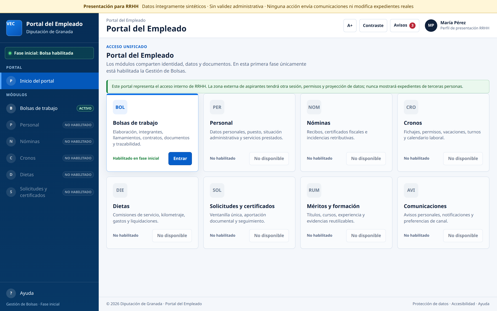
La portada presenta los módulos del portal como tarjetas. En la fase inicial solo Bolsas de trabajo aparece habilitado, con el botón Entrar; el resto (Personal, Nóminas, Cronos, Dietas, Solicitudes y certificados, Méritos y formación, Comunicaciones) se muestran como «No habilitado» hasta sus fases correspondientes.
La franja informativa recuerda el carácter del acceso: este portal es la zona interna de RRHH. La zona externa de aspirantes tendrá su propia sesión, permisos y proyección de datos, y nunca mostrará expedientes de terceras personas.
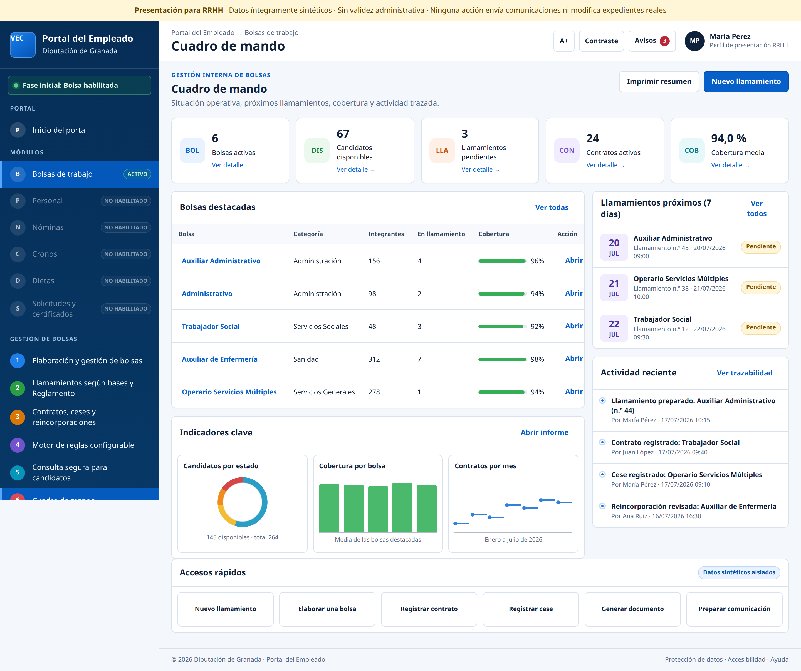
Es la vista de situación del módulo y la primera que conviene abrir cada mañana. Ofrece, de arriba abajo:
Los botones Imprimir resumen y Nuevo llamamiento de la cabecera permiten, respectivamente, obtener una copia imprimible del cuadro y lanzar el asistente de llamamientos que se describe en el apartado 6.
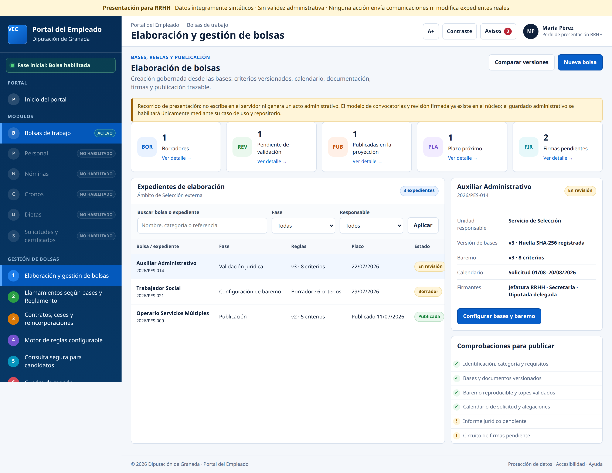
Este bloque gobierna el ciclo de vida de cada bolsa desde su expediente de elaboración hasta su publicación. La vista principal lista los **expedientes de elaboración** con su fase (configuración de baremo, validación jurídica, publicación), la versión de reglas aplicable, el plazo, la unidad responsable y el estado.
Al seleccionar un expediente se abre su detalle con los **campos gobernados** (versión de bases con huella criptográfica registrada, calendario de solicitudes, circuito de firmantes) y las **comprobaciones para publicar**: la aplicación no permite publicar una bolsa hasta que las bases están aprobadas y firmadas, el baremo configurado y validado, y el calendario definido.
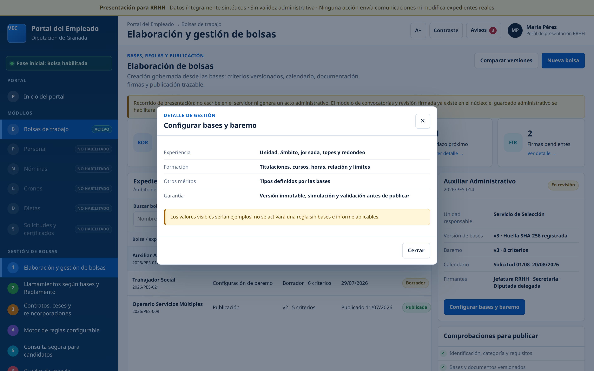
El botón Configurar bases muestra las familias de configuración del baremo: criterios, puntuaciones, requisitos y versiones. Cada versión de bases publicada queda sellada con su huella y no puede alterarse sin dejar constancia; las convocatorias posteriores citan siempre la versión exacta con la que se resolvieron.
El llamamiento es el acto más delicado de la gestión de bolsas y el portal lo conduce mediante un asistente que impide saltarse comprobaciones. Los cuatro pasos aparecen siempre visibles en la parte superior y puede volverse a un paso anterior sin perder lo introducido.
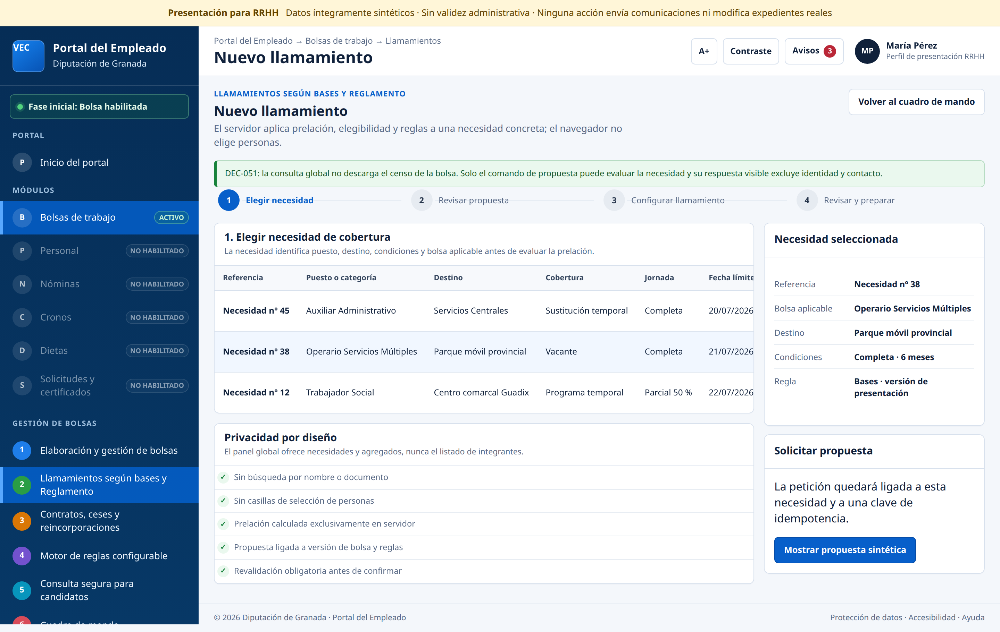
Se parte de una necesidad de cobertura ya registrada (referencia, bolsa, destino, jornada, duración y tipo de cobertura). Basta con pulsar Seleccionar en la necesidad que se va a atender. La regla aplicable (Reglamento y bases vigentes) queda asociada desde este momento.
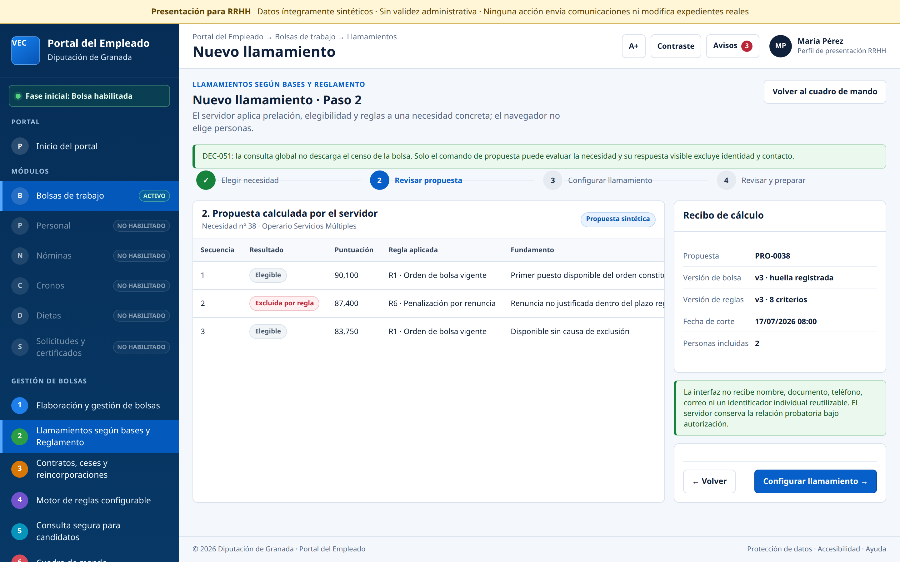
Es el corazón del sistema. El servidor aplica la prelación, la elegibilidad y las reglas de la bolsa a la necesidad concreta y devuelve una propuesta ordenada; el navegador no elige personas ni puede alterar el orden.
Cada fila de la propuesta muestra la secuencia, el resultado (Elegible, No disponible, Excluida por regla), la puntuación, la regla aplicada y su fundamento. El panel Recibo de cálculo deja constancia de la propuesta: identificador, versión de bolsa (con huella registrada), versión de reglas, fecha de corte y número de personas incluidas.
Protección de datos: la interfaz no recibe nombre, documento, teléfono, correo ni ningún identificador individual reutilizable; el servidor conserva la relación probatoria completa bajo autorización. De este modo puede revisarse la legalidad del orden sin exponer identidades en pantalla.
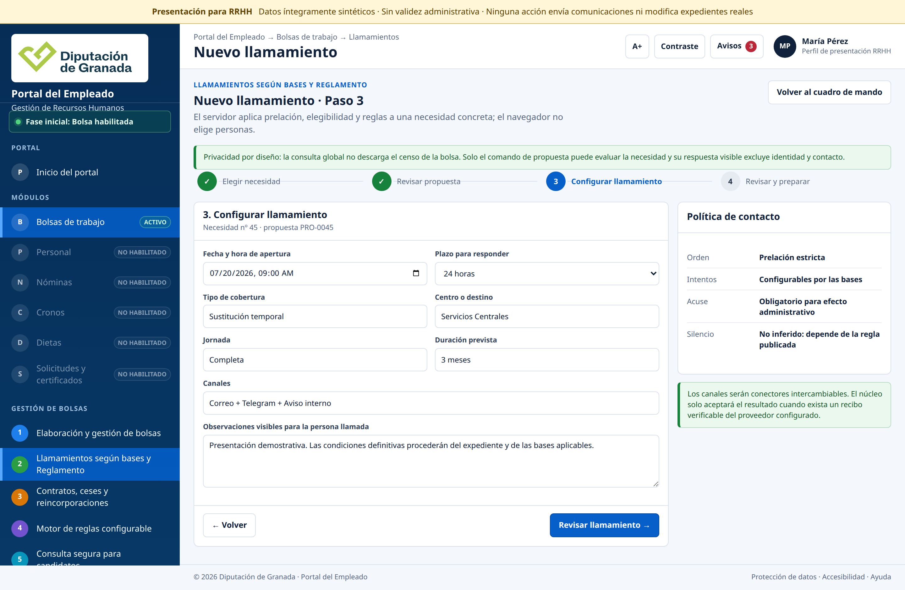
Se establecen las condiciones del llamamiento: apertura, plazo de respuesta (24, 48 o 72 horas desde la recepción fehaciente), tipo de cobertura, destino, jornada, duración y canales de comunicación previstos (correo, mensajería, aviso interno). Los valores proceden de catálogos gobernados, de modo que no pueden introducirse condiciones fuera de las previstas.
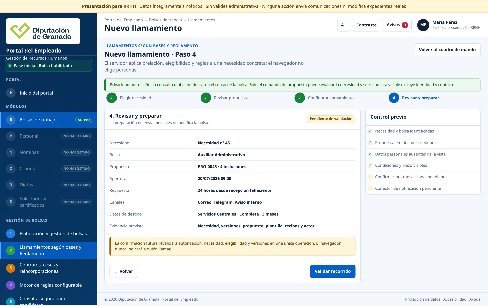
Resumen completo antes de preparar el acto: bolsa, personas seleccionadas según el orden visible, apertura, plazo de respuesta, canales, datos de destino y las evidencias previstas que quedarán registradas (identidad y rol de quien actúa, autorización sobre el expediente, versión de bolsa y de reglas, selección y orden aplicados, plantillas y firmas, recibos de entrega). El acto administrativo se genera después por el circuito de firma y notificación correspondiente.
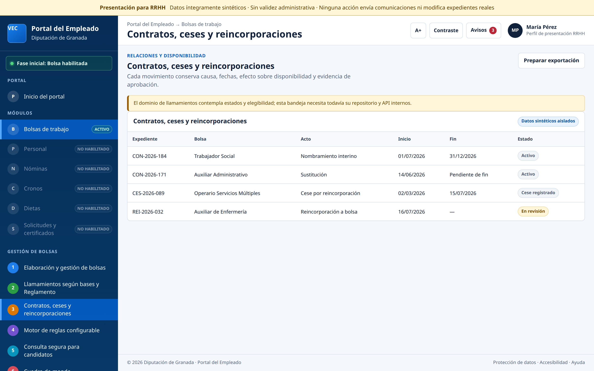
Bandeja de relaciones y disponibilidad: cada movimiento (contrato, cese, reincorporación) conserva su causa, las fechas de inicio y fin, el efecto sobre la disponibilidad de la persona en la bolsa y la evidencia de su aprobación. Así, la disponibilidad que usa el motor de llamamientos deriva siempre de actos registrados y no de anotaciones manuales.
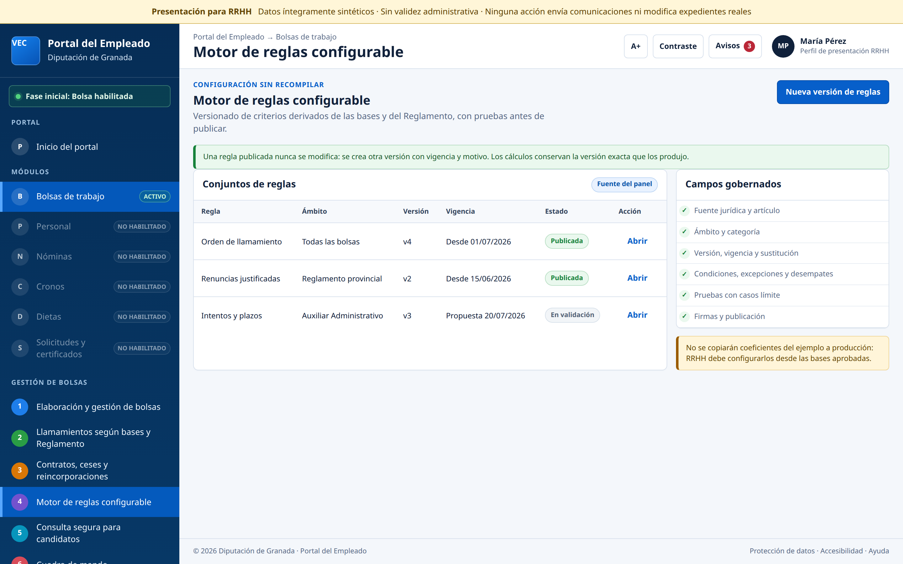
Las reglas de funcionamiento de cada bolsa (orden de prelación, causas de indisponibilidad, penalizaciones, desempates) se administran como conjuntos de reglas versionados. La vista lista cada conjunto con su versión, número de criterios y estado.
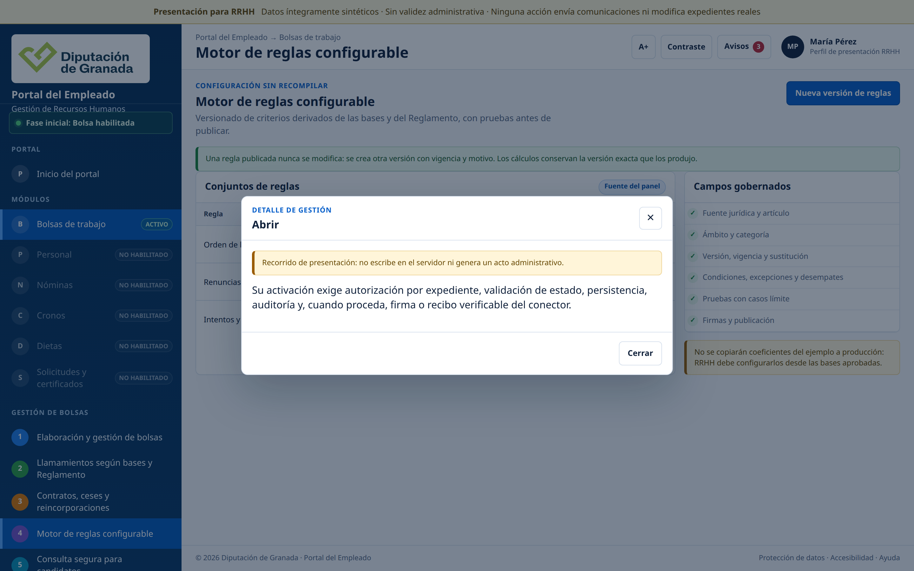
El detalle de una regla muestra su definición y su fundamento normativo. Las versiones publicadas son inmutables: un cambio de reglas produce una versión nueva, y cada llamamiento cita la versión exacta con la que se calculó, lo que permite comparar versiones y justificar cualquier resultado pasado.
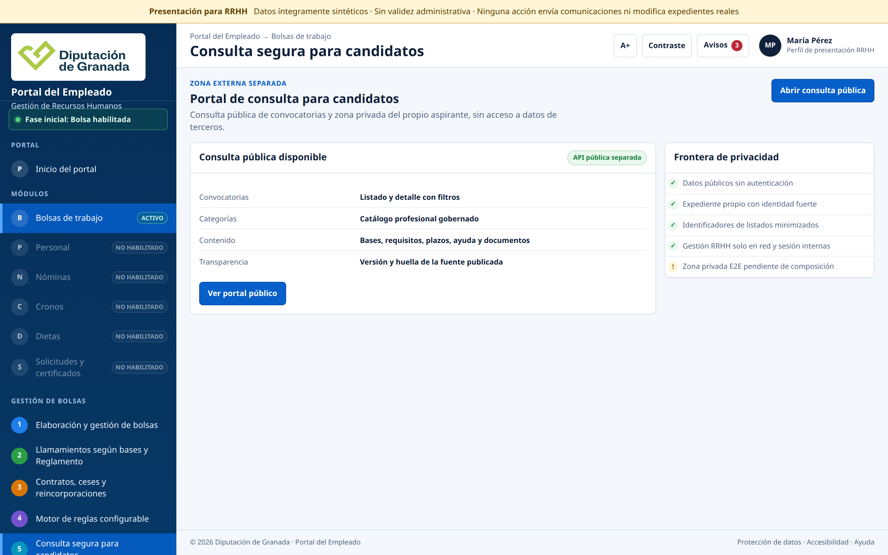
Define lo que la zona pública puede mostrar a cada aspirante: su propia posición y estado, nunca el censo completo ni datos de terceros. La vista interna muestra la frontera de privacidad (qué campos se proyectan al exterior) y la política de contacto. La consulta pública queda así gobernada desde dentro, con los mismos catálogos y versiones.
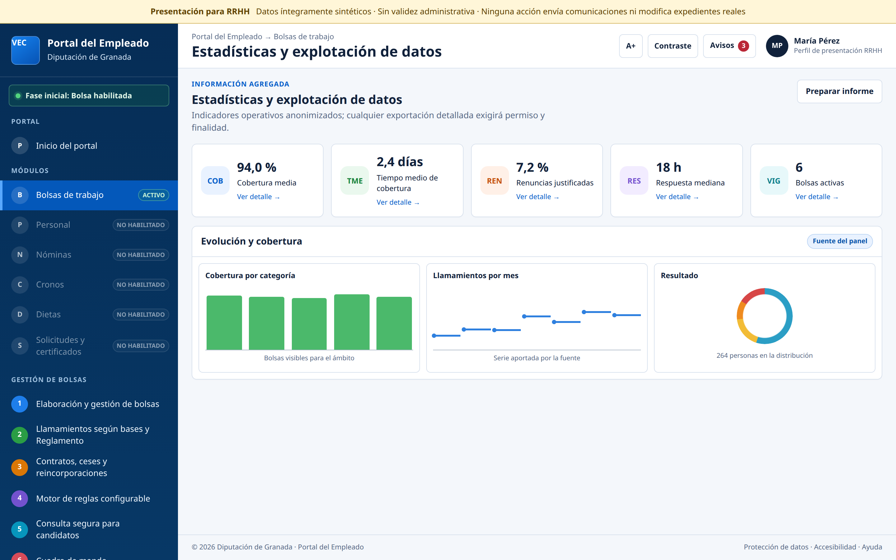
Indicadores agregados del módulo: evolución y cobertura, distribución por categorías y series temporales. Los agregados se calculan en el servidor con fecha de corte y ámbito; la explotación de datos con fines de informe se apoya en estos indicadores y no en descargas de datos personales.
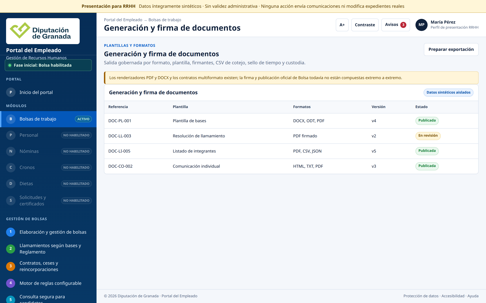
Catálogo de plantillas y formatos para la salida documental del módulo (resoluciones, comunicaciones, certificados). Cada generación queda gobernada por su plantilla, formatos disponibles, versión, firmantes, CSV de cotejo, sello de tiempo y custodia, de modo que todo documento emitido es verificable posteriormente.
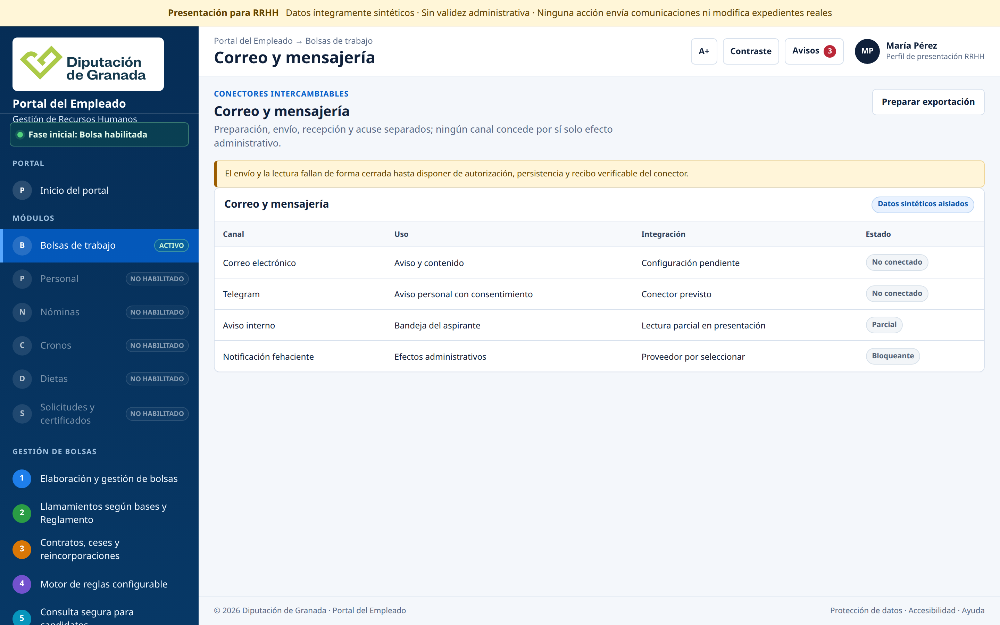
Canales de comunicación con las personas candidatas, presentados como conectores intercambiables (correo, mensajería, aviso interno) con su uso, integración y estado. La preparación, el envío, la recepción y el acuse se registran por separado; ningún canal concede por sí solo efecto administrativo — el efecto lo dan los recibos y su incorporación al expediente.
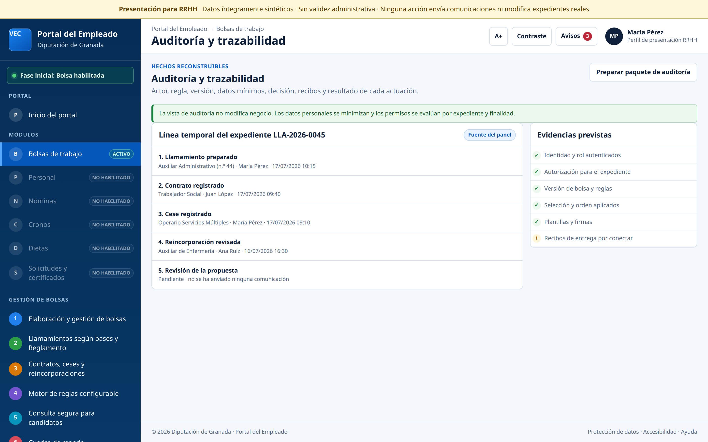
Línea temporal completa del expediente: cada acto (preparación de un llamamiento, registro de un contrato, cese, comunicación) aparece con su autor, fecha, hora y evidencias asociadas. La trazabilidad es de solo lectura y permite reconstruir cualquier decisión con las versiones de bolsa y reglas que estaban vigentes en ese momento.
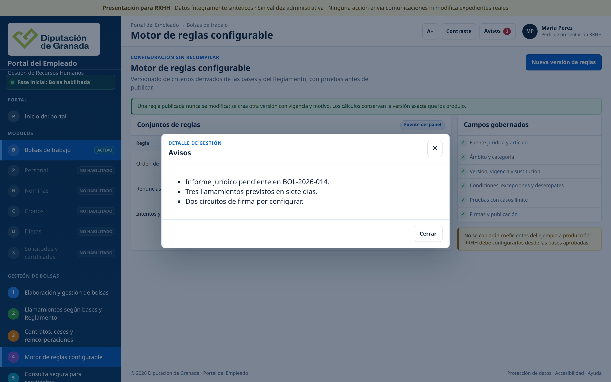
El botón Avisos de la cabecera muestra las notificaciones internas pendientes (llamamientos por preparar, plazos próximos, tareas de revisión).
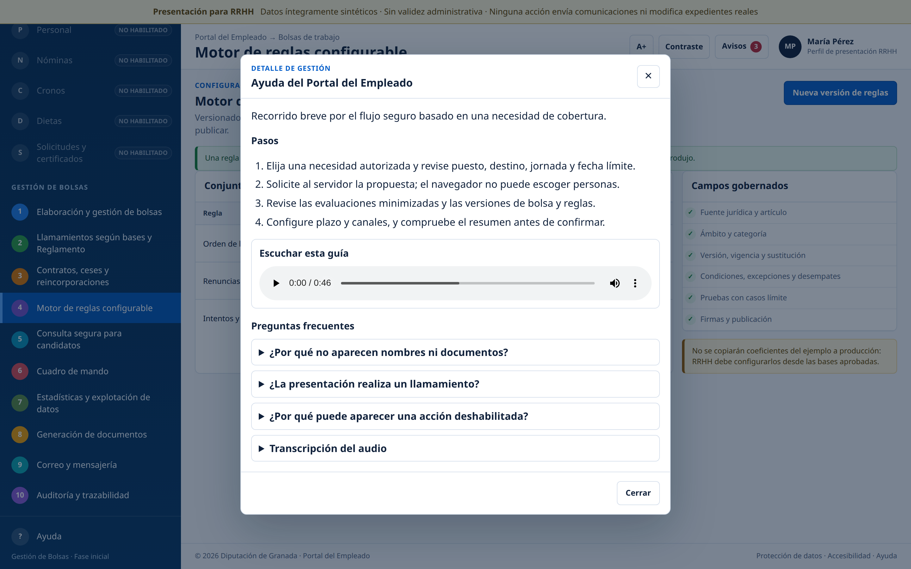
El enlace Ayuda, disponible en el menú lateral y en el pie, ofrece la guía de uso contextual del módulo. El ejemplo incluye un recorrido de cuatro pasos, preguntas frecuentes, un audio local y su transcripción completa; puede usarse con teclado y no envía ningún contenido a servicios externos.
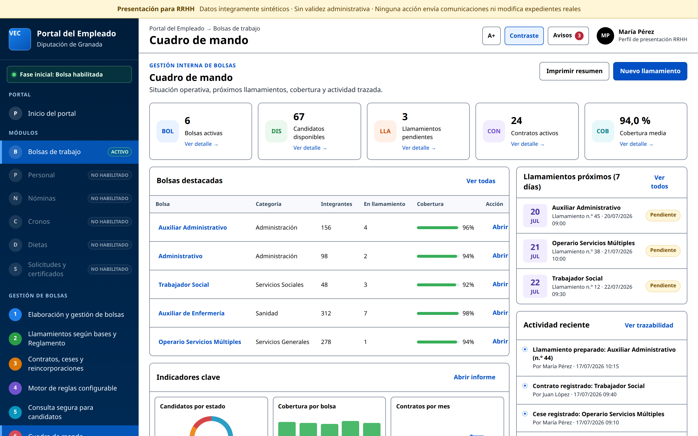
El portal cumple criterios de accesibilidad de uso diario:
Estas dos preferencias visuales son la única información que el navegador almacena localmente: el portal no guarda en el equipo datos de bolsas, candidatos ni expedientes.
El módulo aplica minimización de datos por diseño:
Portal del Empleado · Diputación de Granada. Las pantallas de este manual proceden del modo de demostración con datos sintéticos; los textos, cifras y personas que aparecen en ellas no corresponden a expedientes reales.